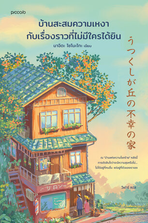

うつくしが丘の不幸の家 (Utsukushigaoka no Fukou no Iie)
เรื่องราวของบ้านมือสองหลังหนึ่งในเมืองอุตสึคุชิกาโอกะ ที่ถูกผู้คนในชุมชนเล่าลือว่าเป็น "บ้านแห่งความโชคร้าย" เพราะครอบครัวที่เคยย้ายเข้ามาอยู่ต่างต้องพบเจอกับรอยร้าวและความทุกข์จนต้องย้ายออกไป ทว่าภายใต้ข่าวลือเหล่านั้น กลับซ่อนความจริงและความรู้สึกอันละเอียดอ่อนที่ไม่มีใครเคยได้รับฟัง
ฉากหน้าของการสร้างครอบครัวที่ดูสมบูรณ์แบบในสายตาคนรอบข้าง แต่แท้จริงแล้วกลับซ่อนรอยแตกร้าว ความคาดหวัง และความเหงาที่พูดออกมาไม่ได้เอาไว้ภายในบ้าน
ข่าวลือเรื่อง "บ้านแห่งความโชคร้าย" ที่ถูกตัดสินจากคนภายนอก โดยที่ไม่มีใครเคยหยุดฟังเสียงหัวใจและความจำเป็นของคนที่เคยอาศัยอยู่ภายในบ้านหลังนั้นจริงๆ
สะท้อนชีวิตจริงของมนุษย์ทุกคนที่มีทั้งความสุข ความทุกข์ และบาดแผล โดยไม่พยายามตัดสินใคร
ชวนให้เราฉงนคิดถึงคำคน ข่าวลือ และการมองคนอื่นผ่านสายตาของเราเอง
มอบกำลังใจให้คนที่กำลังรู้สึกโดดเดี่ยวหรือแบกรับความคาดหวังของครอบครัวไว้คนเดียว
ดำเนินเรื่องด้วยโทนสีอบอุ่น ละมุน อ่านง่าย แต่เข้าถึงความรู้สึกก้นบึ้งของหัวใจ
บางครั้ง... บ้านอาจไม่ได้โชคร้าย
แต่เป็นหัวใจของผู้คนที่ต้องการพื้นที่สำหรับรับฟังความเหงาเท่านั้นเอง
นอกจากเรื่องราวของตัวบ้านแล้ว หนังสือยังพาเราไปรู้จักกับ **"ฮารุอิชิ"** ชายหนุ่มเจ้าของร้านขายของเก่าผู้มีสายตาแหลมคม เขามักมองเห็น "คุณค่า" และ "เรื่องราว" ที่ซ่อนอยู่ในสิ่งของมือสองที่คนอื่นมองข้าม เช่นเดียวกับที่เขามองเห็นความจริงหลังข่าวลือของบ้านหลังนี้